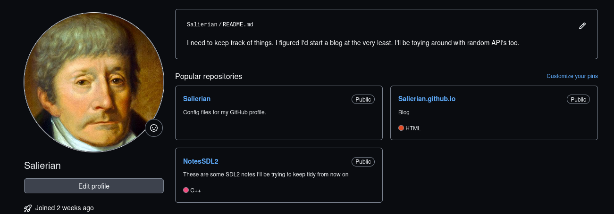

Hoy trataré de modificar mi perfil, el único objetivo por hoy será hacer que se vea más agradable.
Por lo que me dedicaré a modificar el archivo readme del repositorio salierian para ver de qué manera puedo estilizarlo.
Lo ideal sería hacer algo breve.
30 de Marzo de 2024.
Esta es una imágen de mi perfil actual. Debería mejorar con las contribuciones de hoy,
Dada la naturaleza de la imágen, mi estandarización no cumple los requisitos para presentarla de buena manera actualmente.
Debo completar un estándar que me permita publicar este tipo de fotografías de mejor manera.